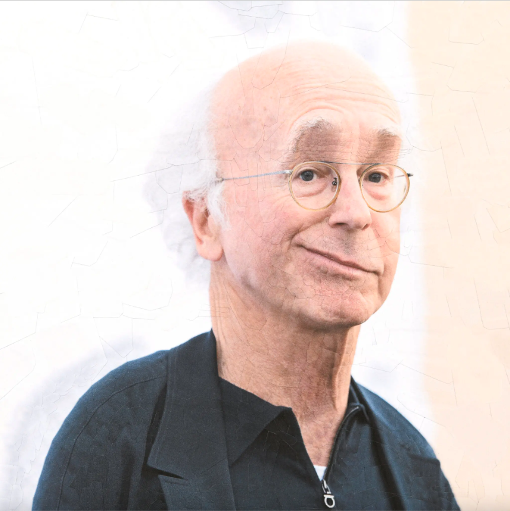
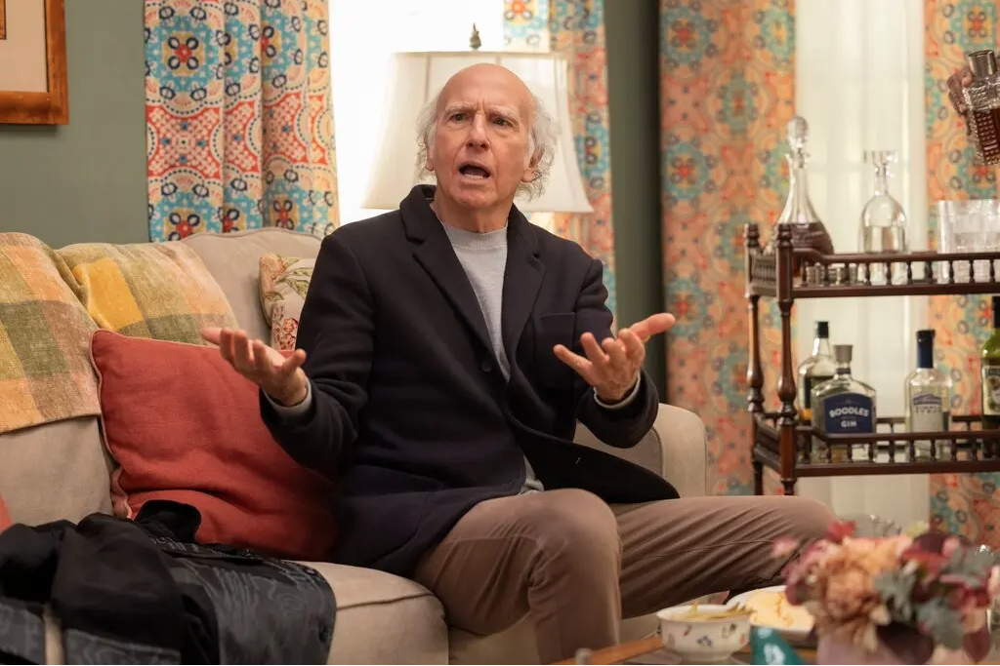

<!DOCTYPE html>
<link rel="stylesheet" href="main.css"/>
</body>
</html>
<html>
    <div class="container">
    <div class="black-box">
        <div class="white-text">
            <h3><em>CRITIC’S NOTEBOOK</em></h3>
            <h1> ‘Curb Your Enthusiasm’ Made Something Out of Nothing </h1>
            <h2> Larry David’s HBO series never aimed at grand statements. But its reflection of modern grievances was pretty, pretty good.</h2>
        </div>
      </div>
      <div class="image">
        
    </div>
      </div>
      
<body>
    <div class="body-style">
    At the end of his 1999 HBO special, “Larry David: Curb Your Enthusiasm,” David wraps up a stand-up comedy set by telling his audience he has no more material for them. <blockquote>“This is what happens when you run out of nothing,”</blockquote>
    The joke refers to the famous description of “Seinfeld,” the sitcom that David created with Jerry Seinfeld, as “a show about nothing.” It is also a bit of a lie.
<br><br>
    For starters, it was always misleading to say that “Seinfeld” was about nothing. Yes, it was militantly anti-message, building small-bore farces around four single, child-free New Yorkers who had an inordinate amount of time to sit in a diner. But its allergy to making statements was a statement in itself; it made the show emblematic of the sanguine, end-of-history 1990s.
    <br><br>
    Second, David hadn’t really run out of anything. “Curb Your Enthusiasm,” the comedy of ill manners that emerged from David’s special, began on HBO in 2000. It has run off and on for nearly a quarter-century, and Season 12, beginning on Sunday, will be its last.
    <br><br>
    On “Curb,” David starred as “Larry David,” simultaneously the world’s most comfortable and uncomfortable man, registering his complaints to a cast of sounding boards: Cheryl (Cheryl Hines), his wife and later ex-wife; Jeff (Jeff Garlin), his manager; Leon (J.B. Smoove), his permanent houseguest, who joined the series in mid-run and filled the chaos-demon role that Kramer (Michael Richards) did on “Seinfeld.”

    <div class="caption">
        On “Curb,” David has starred as “Larry David,” simultaneously the world’s most comfortable and uncomfortable man. Credit: John Johnson/HBO
    </div>
<br><br>
    You might say that “Curb” was simply a premium-cable version of “Seinfeld,” with improvised dialogue. The material was filthier — recall the obituary typo that rendered “beloved aunt” into a phrase unairable in NBC prime time — the milieu more autobiographical and more overtly Jewish. (“Seinfeld” made its cranky Larry David alter ego, Jason Alexander’s George Costanza, into a crypto-Jew with an Italian surname.) The affluent characters of “Curb” spent as much time eating breakfast and contemplating sandwiches as the “Seinfeld” gang did. They just ran up a higher tab.
<br><br>
But “Curb” was its own thing, for its own time. Much as “Seinfeld” captured the ironic vibes of the end of the millennium, “Curb” was the signature comedy for the agitated, antagonistic era of the 21st-century social internet.
<br><br>
“Curb” began during a transitional era of digital life, just after the mass popularization of the web, right around the birth of blogs, a few years before the emergence of Facebook and Twitter. It is not, on the surface, an extremely online show, nor is Larry David exactly a digital native. Early in the new season, he ends up in a one-sided shouting match with an unhelpful Siri.
<br><br>
But the show’s comedic engine, the conflict that arises when different codes of behavior smash up against each other, is also the continual drama of social media. (If you ever want to know what it is to be truly hated, express an opinion online about whether one should <a href="https://www.nytimes.com/2020/02/15/travel/airplane-seat-recline-video.html"> recline one’s seat</a> on a plane flight.)
<br><br>
Larry David is a distinctive figure in comedy, but he is a familiar type online. He is the guy who steps into a mess, doubles down and becomes the target of mass opprobrium. “Each day on Twitter there is one main character,” <a href="https://twitter.com/maplecocaine/status/1080665226410889217">the saying </a> goes. “The goal is to never be it.” <blockquote>“Each day on Twitter there is one main character,” <br> “The goal is to never be it.”</blockquote>

Larry is always the main character. He is fueled by a powerful blend of self-centeredness and self-righteousness. He believes that his personal code is all that stands between civilization and an anarchy of pig parking and chat-and-cuts. He also believes other people are sheep, following petty, nonsensical rules, whether those govern using an empty bathroom stall for the disabled or a restaurant’s refusal to serve breakfast after a certain hour.
<br><br>
He has been wronged! He is beset by fools! He is every online complainer who will not let it go, who will not say sorry, who is absolutely willing to Die on That Hill. (I can almost hear it as dialogue from “Curb.” “Do you really want to die on that hill, Larry?” “Yes! As a matter of fact I will die on that hill! I’m a hill-dier!”) “Curb,” with its cascade of offenses and recriminations, can be seen as the comedy equivalent of the
<a href="https://www.engadget.com/reddit-recap-stats-2022-130015151.html"> popular</a> Reddit question A.I.T.A.: Am I the … er, Antagonist?
<blockquote> “Do you really want to die on that hill, Larry?” </blockquote>
<blockquote> “Yes! As a matter of fact I will die on that hill! I’m a hill-dier!”</blockquote>
Even as David has embodied the rancor of social media, he has also somehow managed to carve out a personal exemption to its moralistic commandment that comedy must never punch down.
<br><br>
Larry David — the character at least — does not hesitate to punch down. He’s a down-puncher! A recurrent theme of the show is his affluent character believing himself to be persecuted by service employees, including, in the final season, a car valet, a masseuse, a hotel housekeeper and multiple restaurant servers.

<div class="caption">
    A recurrent theme of the show is David’s affluent character believing himself to be persecuted, registering his complaints to a cast of sounding boards that includes Leon (J.B. Smoove), far left, his permanent houseguest; and Jeff (Jeff Garlin), second from left, his manager. Also pictured, at right, Bob Einstein, who played Marty Funkhouser. Credit: John P. Johnson /HB0
</div>
<br><br>
His saving grace is that Larry almost never punches down, up or sideways without injuring himself twice as badly. Inevitably, his “A.I.T.A.” is answered with a resounding “Y.T.A.” (often delivered by the deliciously scathing Susie Essman).
<br><br>
But also, there’s a kind of twisted egalitarianism to Larry’s bile. He believes, like the Roman playwright Terence, that nothing human is alien to him, that no one is better or worse than he is — and that, therefore, no one gets a pass from his kvetching.
</div>
</body>
</div>
<div class="disclaimer">
    *ALL TEXT/LAYOUT ABOVE INTENDED TO MODEL THE ORIGINAL NYT ARTICLE*
</div>
</html>